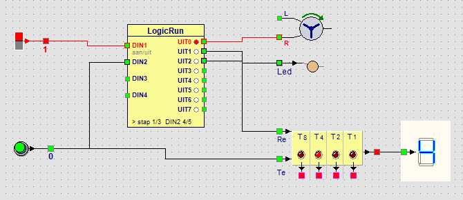

Parcours › Avancé › Leçon 14 sur 18

| Pas | Actif | Que se passe-t-il ? | Combien de temps ? |
|---|---|---|---|
| 1 | UIT0 | le tapis tourne | attendre 5 x DIN2 : jusqu’à ce que 5 boîtes soient passées |
| 2 | UIT1 + UIT2 | le tapis s’arrête, la LED est allumée (emballage) et le compteur est à 0 | 4 x 500 ms = 2 secondes |
Le pas 1 n’a pas de durée fixe : la colonne attendre indique 5 x DIN2. Le programme compte les impulsions sur DIN2 et continue dès que la cinquième impulsion est terminée (voir Attendre). En haut de la fenêtre et en bas du bloc, vous voyez combien ont déjà été comptées, par exemple DIN2 4/5.
Au pas 2, Re du compteur est haut tout le temps. Tant que Re est haut, le compteur reste à 0 : les impulsions que le générateur donne entre-temps ne sont pas comptées. Ainsi, le compteur recommence proprement à 1 avec la boîte suivante.
Faites des boîtes de 3 au lieu de 5. Faites ensuite redémarrer le tapis seulement quand quelqu’un appuie sur un bouton-poussoir prêt.
Dans le pas 1, cliquez sur 5 x DIN2, choisissez Jusqu’à un nombre d’impulsions › DIN2 et entrez 3. Ajoutez après le pas 2 un pas avec seulement UIT2 actif (le compteur reste alors à 0) et choisissez dans attendre : Jusqu’à entrée active › DIN3. Placez un bouton-poussoir sur le panneau et reliez-le à DIN3. Laissez DIN3 sur - dans les fonctions des entrées.